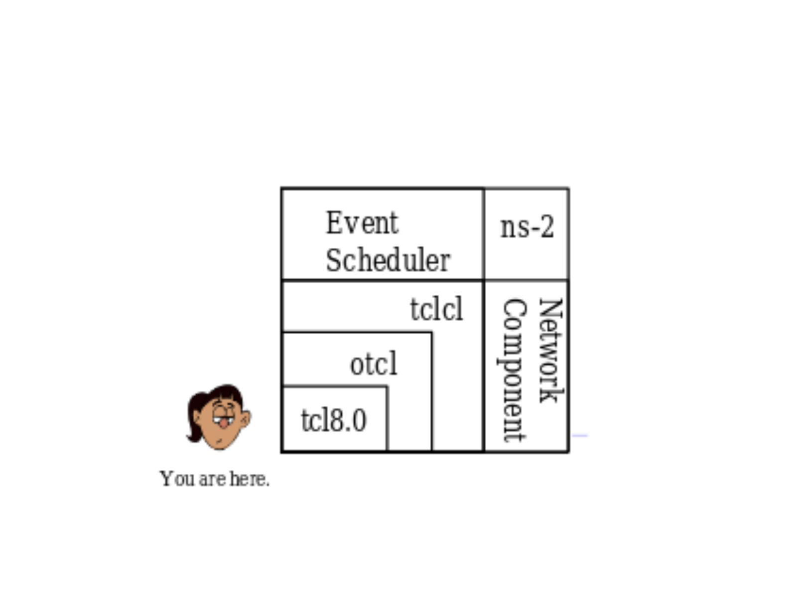
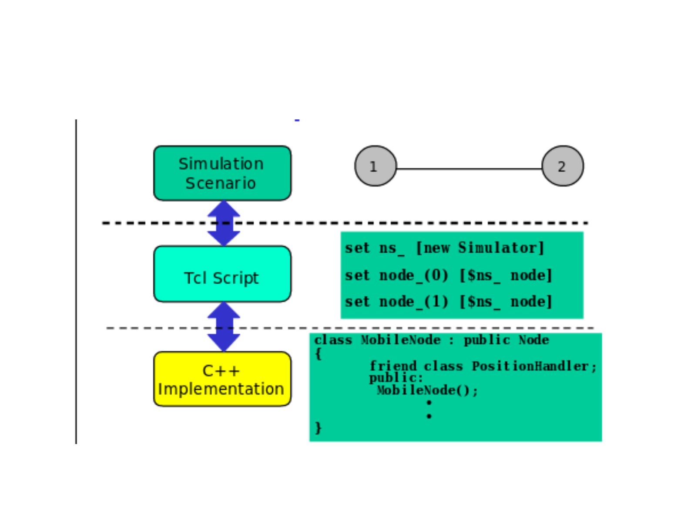
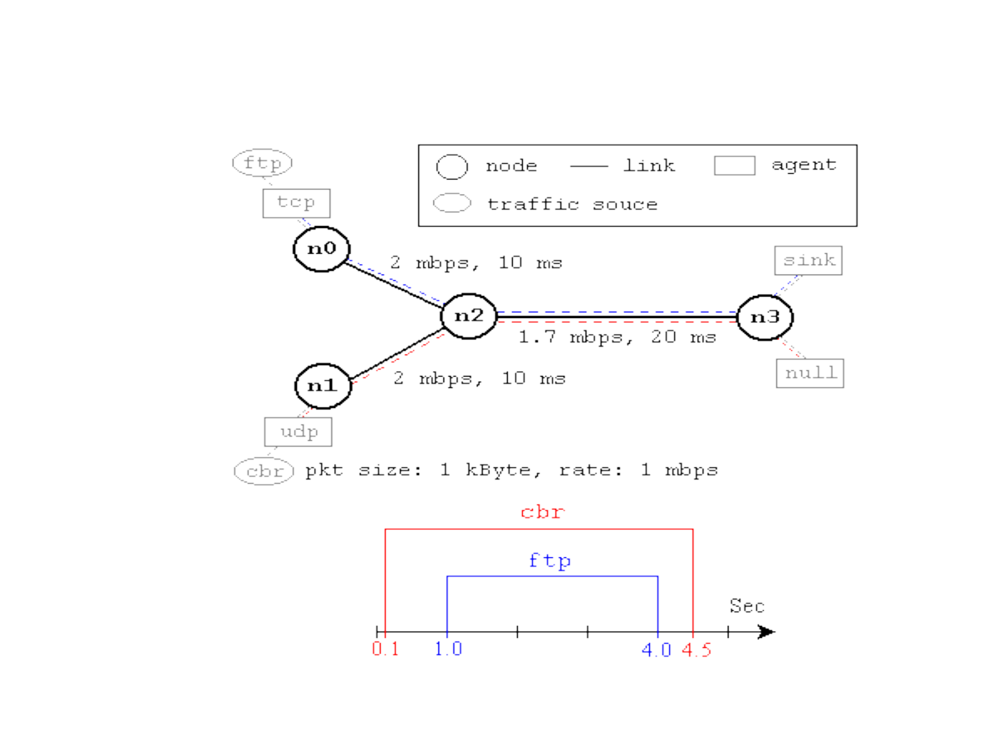
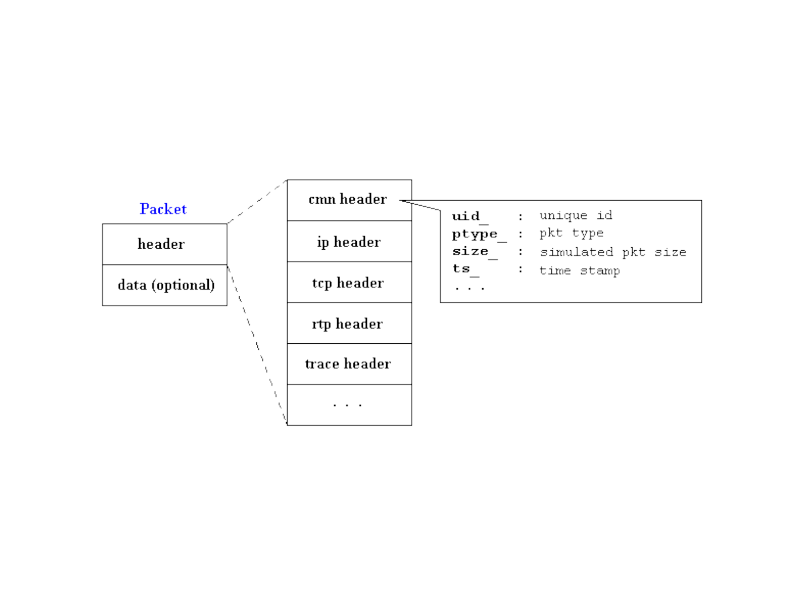

Basics of Network Simulator 2

NS-2
Discrete event simulator
Works at packet level
Protocols supported: TCP,UDP, FTP,HTTP
Simulation of Wired and Wireless networks
Unix based
Uses TCL as scripting language

Architecture

Implementation
Installation
ns-2 package
Dependencies: g++, tcl, otcl, tclcl
NSG.jar (TCL Script generator)
Creating scenarios for tcl
NAM (Network Animator)

Debian Based installation
sudo apt-get install ns2
sudo apt-get purge nam
wget --user-agent="Mozilla/5.0 (Windows NT
5.2; rv:2.0.1) Gecko/20100101 Firefox/4.0.1"
"http://technobytz.com/wp-
content/uploads/2015/11/nam_1.14_amd64.zip"
unzip nam_1.14_amd64.zip
sudo dpkg -i nam_1.14_amd64.deb
sudo apt-mark hold nam

TCL basic syntax and defns
Tcl is a general purpose multi-paradigm system programming
language. It is a scripting language that aims at providing the
ability for applications to communicate with each other.

NS by example

Event Scheduler
set ns [new Simulator]
$ns use-scheduler Heap
$ns at 300.5 "complete_sim"
. . .
proc complete_sim {} {
. . .
}

Packet Format
- By Sundar Raman